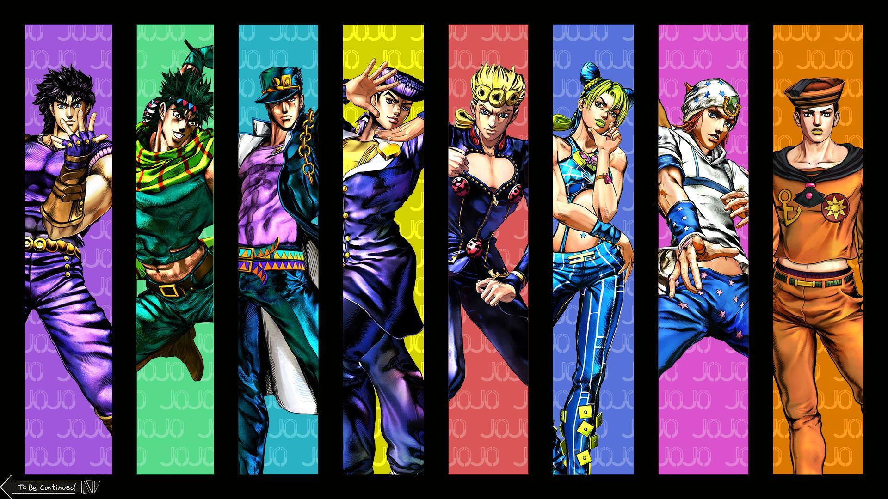
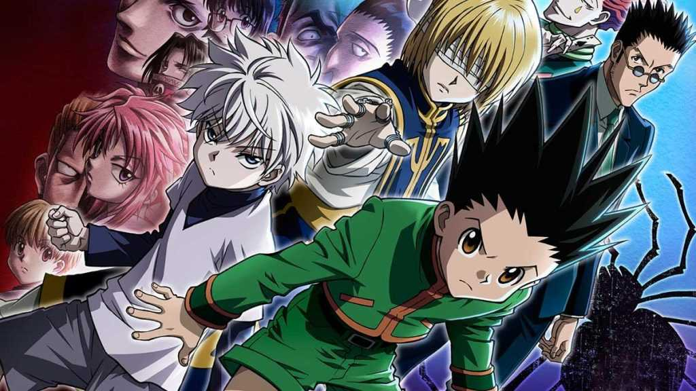

This anime will definetly change your perspective of such distinctively animated shows. Honesly, an amazing master peice with various hidden messages, cliff hangers and plot twists that will have you on edge. I don't advise anyone watching anime for the first time to watch this show straight away because I personally feel like there will be no other anime that can top this. Based on medieval times whereby a population is trapped within various walls to protect themselves from man-eating humanoid titans, only humanity's bravest dared to venture out at the risk of their own lives to find a solution to the ongoing torment.
A very enjoyable experience watching this show. If your the adventurous type that likes quests and action then this is the one for you. The animation style of this show is very unique to any other anime using various colours that create abstract dimensions and perspectives. Based on the ancestor of the Joestar family encountering the evil unleashed by his diabolical adopted brother, the whole family line now has to fight him and his minions to preserve peace and restore order.
Another one of my personal favourites packed with adventure, drama and plot twists, also the only anime that managed to bring tears to my eyes. Words can't begin to describe how good of an anime this is and will continue to be. Based on a young boy that embarks on a challenging adventure on the quest to find his father who left him at a young age to pursue being a hunter. His son follows in his footsteps along the way facing various challenges and interesting people.